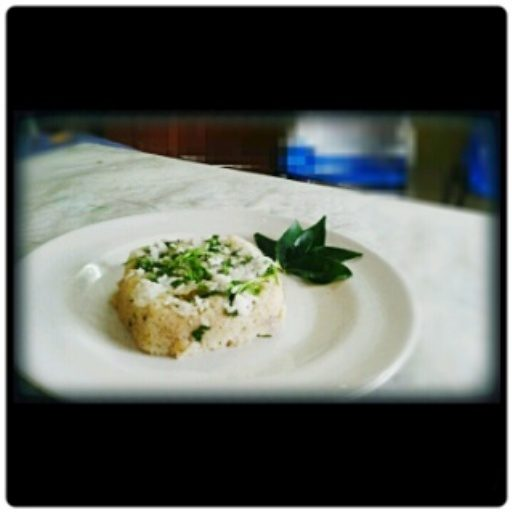

Contains: milk, mustard
Ingredients
Quantities for 4.
- 2 cups, slightly sour, whisked smooth Yogurtfresh sweet yogurt gives a flat curry
- 300g, peeled and cubed 2cm Ash Gourdokra or chow chow are the other usual choices
- 5 tbsp fresh, grated Coconut
- 1 tsp Cumin Seeds
- 3 Green Chilli
- 1 tbsp, soaked 20 minutes Riceground with the coconut; this is what stops the yogurt splitting
- 1 tbsp, soaked 20 minutes Toor Daladds a rounder body to the pasteoptional
- 1/2 tsp Turmeric
- 1 tsp Mustard Seeds
- 1/4 tsp Fenugreek Seedsany more and the curry turns bitter
- 2, broken Dried Red Chilli
- 2 sprigs Curry Leaves
- 1/4 tsp Asafoetidause compounded-free hing to keep this gluten-free
- 2 tbsp Coconut Oil
- to taste Salt
Cookware
stovetop, blender
Checked against the ingredient list for ten allergens: milk, egg, fish, crustaceans, tree nuts, peanuts, sesame, mustard, soy and gluten. Brands vary, so read the label on anything new to you.
Before you start
- Soak the raw rice and toor dal together for 20 minutes so they grind smooth.
- Take the yogurt out of the fridge early. Cold yogurt hitting a hot pan splits immediately.
- Whisk the yogurt with 1/2 cup water until there is no lump left anywhere.
Method
- Simmer the ash gourd in 1 cup water with the turmeric and salt for 8 minutes, until translucent at the edges.
- Grind the coconut, cumin, green chilli, soaked rice and toor dal with 1/2 cup water to a very smooth paste.Any grit left in the paste will be obvious in the finished curry.
- Add the paste to the cooked gourd and simmer 6 minutes, until the raw rice smell disappears.
- Take the pan off the heat and let it stop bubbling completely, about 2 minutes.
- Pour in the whisked yogurt, stirring constantly as it goes.
- Return to the lowest possible heat and warm it only until steam rises and it thickens slightly.The moment it boils, the yogurt curdles into grains. Take it off before you think you should.
- Check the salt and take it off the heat entirely.
- Heat the coconut oil, pop the mustard seeds, add the fenugreek, red chilli, curry leaves and hing.Fenugreek burns black in seconds. Add it after the mustard has finished popping.
- Pour the tempering over and serve with hot rice and a dry poriyal.
Storage
Keeps 2 days refrigerated and gets sourer. Reheat only to warm on the lowest heat, stirring; it will split if it boils.
Nutrition Good estimate
Low protein: 7 g a serving, 11% of the calories
| Per serving238 g | Per 100 g | |
|---|---|---|
| Calories | 250 kcal | 106 kcal |
| Protein | 7.0 g | 3 g |
| Carbohydrate | 18.0 g | 8 g |
| of which sugars | 7.2 g | 3 g |
| Fibre | 3.1 g | 1 g |
| Fat | 17.6 g | 7 g |
| of which saturated | 13.8 g | 6 g |
| of which unsaturated | 2.5 g | 1 g |
Ingredients given to taste count as zero, so the real figures run a little higher. Nearest database match used for asafoetida, ash gourd, curry leaves. Estimated from raw ingredients using USDA FoodData Central.
More like this: Vegetarian Indian recipes · Gluten-free Indian recipes · No onion no garlic recipes · Tamil Nadu recipes
Times, yields, allergens and nutrition are guidance. Use your own judgement on doneness and on storing. More in About.